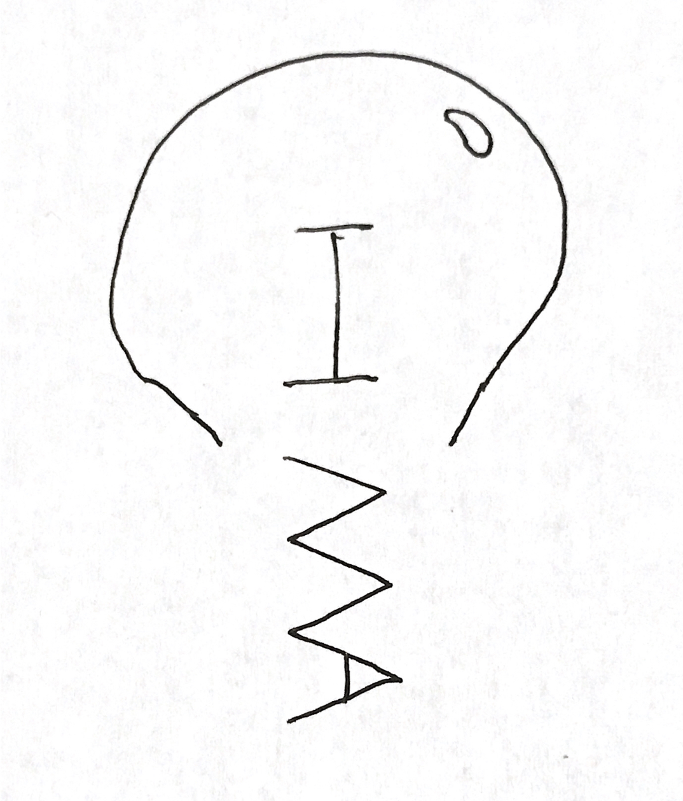
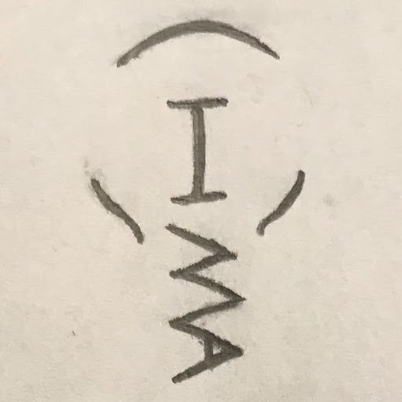
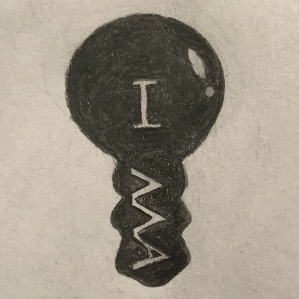
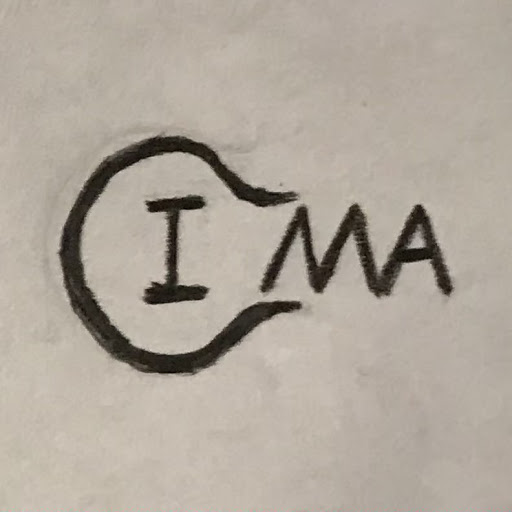
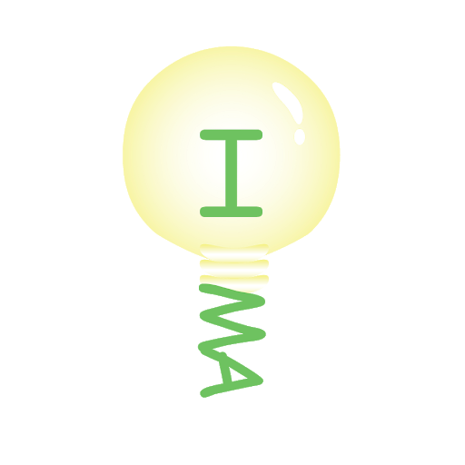
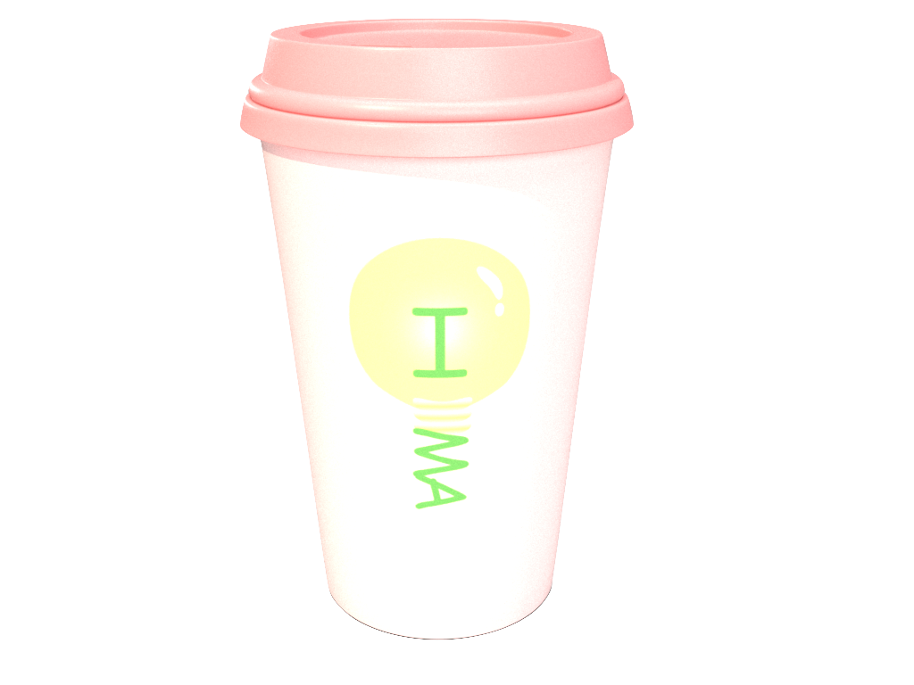
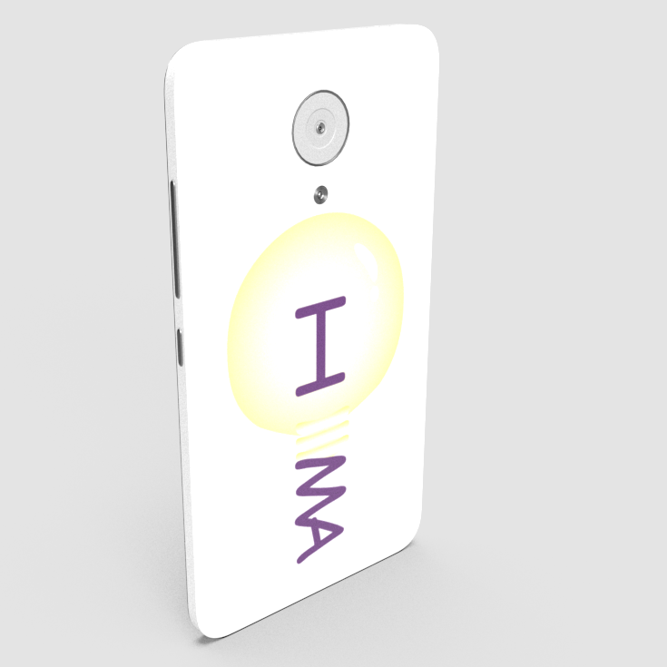
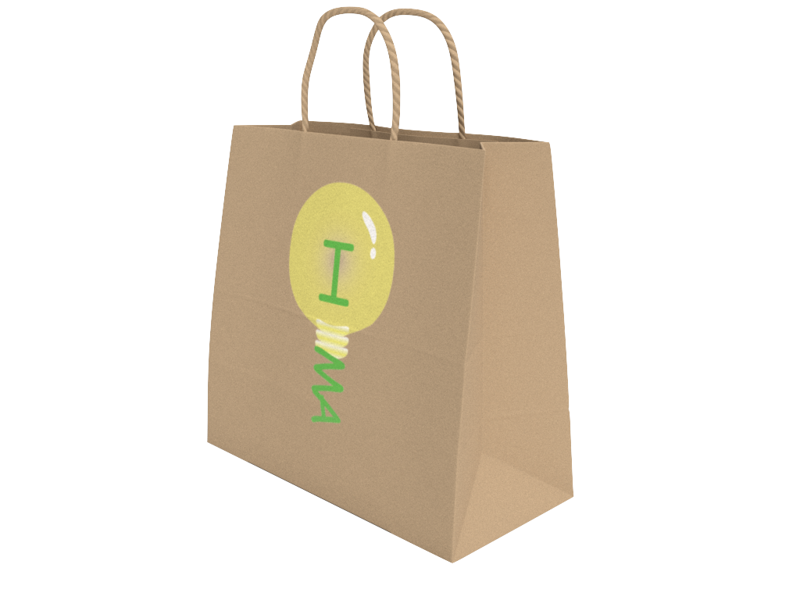

-Problem Statement
Design a Logo to represent the creative aspect of IMA (Interactive Media Art).
-Solution Statement
I incorporated a lightbulb shape to represent IMA creativity, refine the shape, and applied colors that related to IMA.
-Sketches
From the existing sketches, I chosen one that most interested me, which is a light bulb. The light bulb represents inspiration, which is the major value of IMA.
-Refinement
In the process of refinement, there are two different approaches: abstract and concrete



-Color Studies
Yellow for the light bulb. Purple and Green for the typography representing the NYU and IMA color.

-Application
As a brand, I apply it on a coffee cup, a bag, and a phone case.


